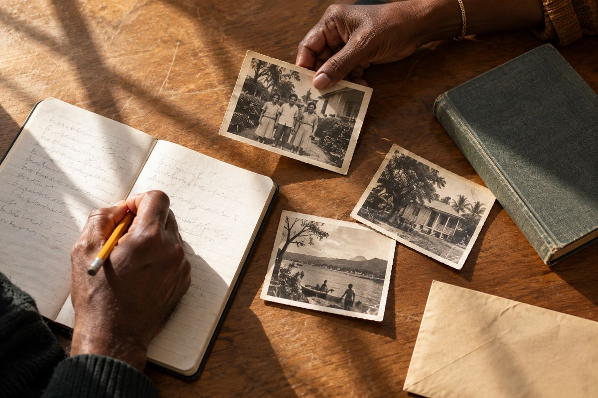

Tracing ancestors back to the period of slavery

For most Caribbean families, the paper trail gets harder around 1838. That was the year apprenticeship ended and people who had been enslaved in the British Caribbean became fully free. Before then, records were rarely kept about enslaved people as individuals with surnames, so the usual sources start to run out.
It is still possible to go further back. It takes patience, and it helps to know which records exist and what they can and cannot tell you.
Start from 1838 and work backwards
Before you go near the earlier records, get as far as you can with baptisms, marriages and burials in church registers from the 1830s and 1840s. Many people were baptised as adults in the years around emancipation, often with a surname recorded for the first time. The church, the parish and any estate named in these records are your best clues for the next step.
The slave registers, 1813 to 1834
From 1813, owners in the British colonies had to register the people they enslaved, and update the registers every few years until 1834. The registers usually give a first name, an approximate age, and whether the person was born in Africa or in the Caribbean. Later registers note births, deaths and sales since the previous return.
Copies are held at The National Archives at Kew in series T 71, and they can be searched online through Ancestry. Because there are no surnames, the way in is usually the name of the estate or the owner from your later records.
Compensation records
When slavery was abolished, the British government paid compensation to the owners, not to the people who had been enslaved. The claims list estates and owners, and can confirm who owned the estate where your ancestor lived. The Legacies of British Slavery database at University College London lets you search the claims free online.
Estate papers and island archives
Some estate records survive, such as plantation journals, inventories and lists of workers. They are scattered between archives in the Caribbean and in Britain, and some are still in private hands. Island archives, such as the Jamaica Archives in Spanish Town and the Barbados Department of Archives, are worth contacting directly.
Matching people across the records
- Note the estate, the parish and any owner’s name from your records after 1838.
- Find that estate in the 1834 register, then work back through the earlier registers.
- Use ages to match people from one register to the next, allowing for some guesswork in the ages recorded.
- Look for mothers and children listed together, which can reveal family groups.
A first name and an age on a list is not much. Put three registers side by side, and a family can start to appear.
Bring it to a meeting
This kind of research is slow, and it can be hard going, emotionally as well as practically. Several of our members have done it and are glad to help. Bring what you have found to one of our meetings.